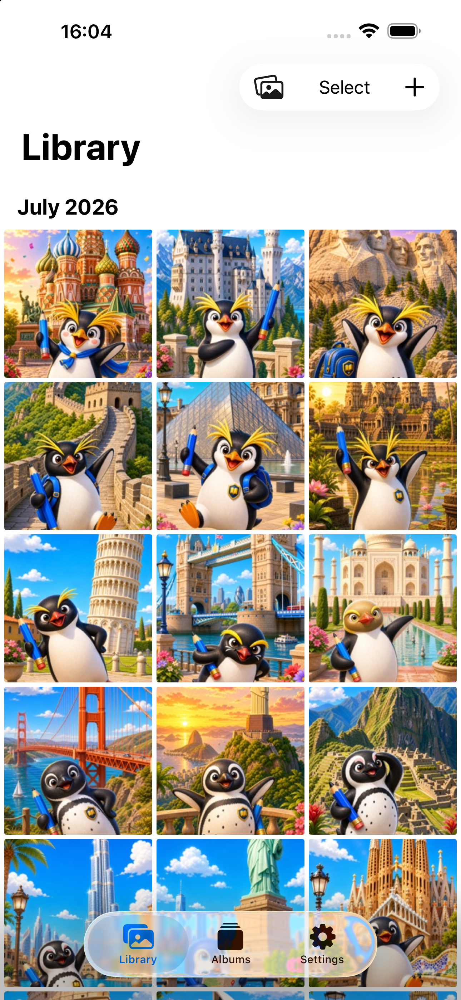
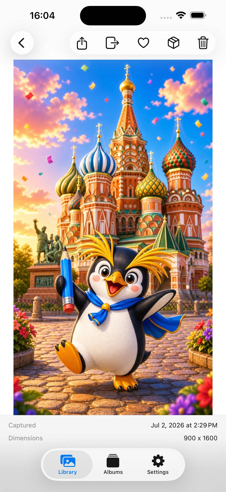
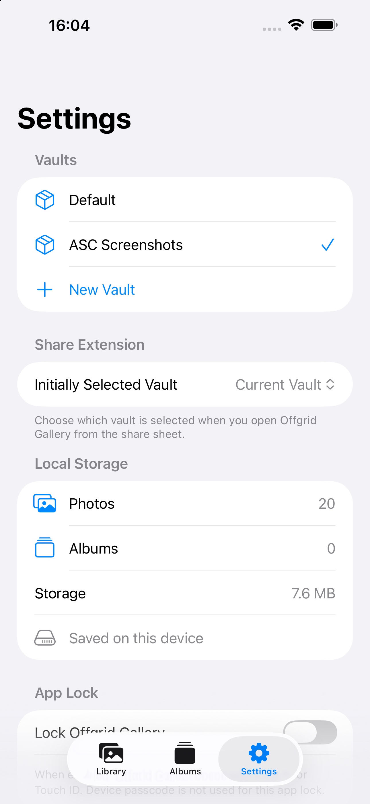
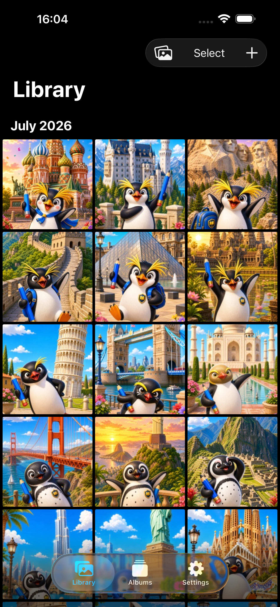

Local-first library
Import or capture photos and videos straight into a private library, with full-resolution originals stored on your device.
Overview
Import or capture photos and videos straight into a private library, with full-resolution originals stored on your device.
Use search, filters, custom albums, favorites, date and location grouping, duplicate detection, and Recently Deleted.
Optional Face ID or Touch ID App Lock keeps your library private, with multiple vaults so you can keep separate libraries side by side.
Screenshots



